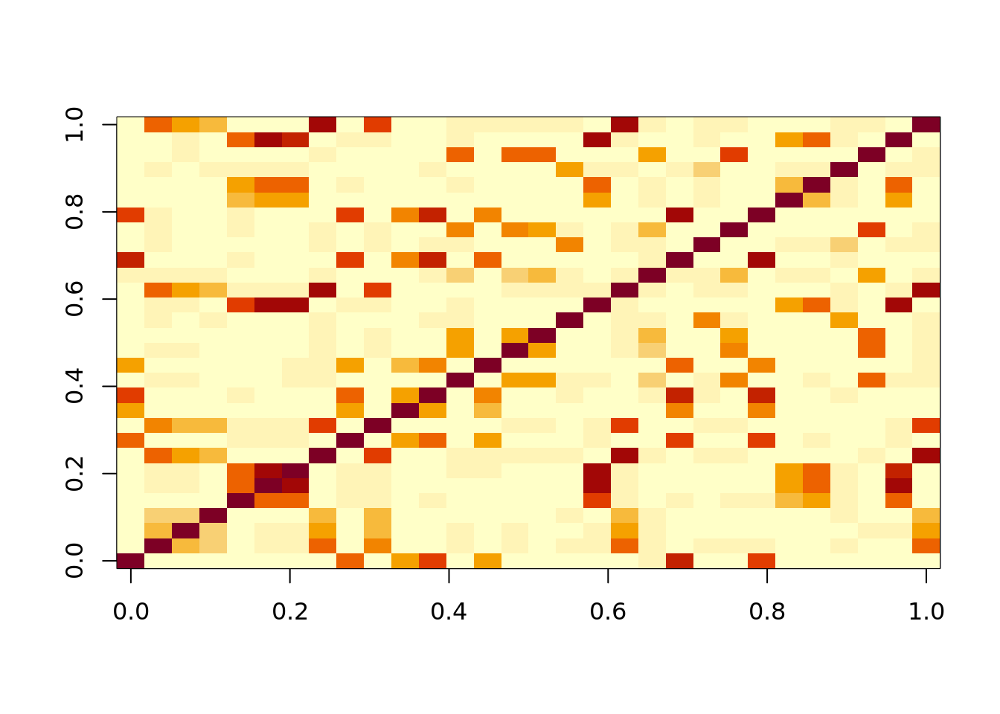

Chapter 4 Principal Component Analysis
Sparcity:
Inbalanced data:
4.1 Principle Component Analysis
hidden_p <- 5
observ_p <- 30
prob <- NULL # runif(hidden_p)
h2o <- sample(hidden_p, #hidden to observed
observ_p,
replace=TRUE,
prob=prob)
h2o <- sort(h2o)
sample_size <- 1000
hidden_z <- sapply(
seq_len(hidden_p),
function(x) rnorm(sample_size))
corrs <- runif(observ_p, 0.3, 0.8)
#create five groups of colinear stuff
observ_x <- mapply(
function(i, corr) {
hidden_z[, i] * corr + rnorm(sample_size) * (1 - corr) *100
},
h2o, corrs)
#observ_x is what you often see, but there is still hidden stuff
image(cor(observ_x))
#This looks weird to what we expect. It doesn't look like five groups
#if we sort instead it works
h2o <- sample(hidden_p, #hidden to observed
observ_p,
replace=TRUE,
prob=prob)
sample_size <- 1000
hidden_z <- sapply(
seq_len(hidden_p),
function(x) rnorm(sample_size))
#This effects how things are correlated!
corrs <- runif(observ_p, 0.3, 0.8)
#create five groups of colinear stuff
observ_x <- mapply(
function(i, corr) {
hidden_z[, i] * corr + rnorm(sample_size) * (1 - corr)
},
h2o, corrs)
#observ_x is what you often see, but there is still hidden stuff
image(cor(observ_x))
beta <- runif(hidden_p, -10, 10)
noise <- rnorm(sample_size, sd=10)
#hard to measure hidden forces!
#we can only measure x, but x is only correlated to hidden stuff
y <- hidden_z %*% beta + noise
df <- data.frame(y, observ_x)
#y depends on the hidden stuff not xMaybe there is a hidden gene inside of you that makes you sick. We can’t (yet) measure that hidden gene. But we can measure symptoms and things like your heart rate. This should be correlated.
4.2 Typical machine learning approach
#training data set, first 800 points (80 percent)
train <- 1:800
ols <- lm(y ~ ., df, subset=train)
length(ols$residual) #correct length## [1] 800#predict on points we didn't use to train
ols_pred <- predict(ols, df[-train,])
#error: differrence between measured values against predict. Mean of this squared MSE!
mean((df$y[-train] - ols_pred)^2)## [1] 146.1034#run ols
#PCA TIME
#only input X, (feature matrix) into the PCA function
pr_out <- prcomp(observ_x, scale=FALSE)
#scale is used because Xs might not be in the same unit, so mean = 0, sd = 1
class(pr_out)## [1] "prcomp"#it has its own class
names(pr_out)## [1] "sdev" "rotation" "center" "scale" "x"#squared value of sdev is eigenvalue
eigen_val <- pr_out$sdev^2
#cumulative sum as a fraction of total eigenvalues
plot(cumsum(eigen_val) / sum(eigen_val))
abline(h=.9)#here after the 5th point, the slope tapers off! This is directly related to the hidden_p value at the beginning. It should help show you how many important hidden features there are.
#it is the percent of variabilitiy caputured by the first k components
#If you don't know what to choose, 90% variability is a good point
plot(pr_out$sdev)#Very similar, but not as interpretable as percent of variability.
#These steps is how k is chosen.
#K is the dimension of W. Data came n x p. We need to shrink it to k. If you don't have
#a clear cut, use 90%
#we don't want to keep all the variability because not all features provide useful
#information. Some of them are so colinear, they just add noise.
cutoff <- 5
#now we are looking at x
#only pull out first k columns
dim(pr_out$x)## [1] 1000 30dim(observ_x)## [1] 1000 30#these will be the same, but we choose a cutoff.
W <- pr_out$x[, 1:cutoff]
df_w <- data.frame(y, W)
#PCA doesn't have to be lm. It could be ridge or lasso too
#should be like the ols from above
pca <- lm(y ~ ., df_w, subset=train)
#same prediction
pca_pred <- predict(pca, df_w[-train,])
#prediction error
mean((df_w$y[-train] - pca_pred)^2)## [1] 145.369#that was the classic view of PCA 4.3 What we would do in data mining
k <- 3
plot(pr_out$rotation[,k])
abline(h = 0)which(abs(pr_out$rotation[, k]) > 0.2)## [1] 4 10 11 20 21 25 26#what is the truth we should be comparing to?
pr_out <- prcomp(observ_x)
test_x <- scale(observ_x, scale = FALSE) %*%
pr_out$rotation
pr_out$x## PC1 PC2 PC3 PC4 PC5 PC6
## [1,] 0.2480232826 0.7733639685 1.926982100 -1.594599e+00 -0.324852116 -0.2984255135
## [2,] -3.9701360522 3.6217005643 -1.355906342 -1.340348e+00 -2.327856890 -0.8162330524
## [3,] -0.4031730397 -0.4363819015 -0.283371628 -2.779478e-01 -0.300730920 -0.4252828662
## [4,] -1.3430636969 1.3350663538 -2.425471525 5.154943e-01 -0.759603185 -0.5509993041
## [5,] -0.0751410769 -2.5497373635 -0.712204169 -1.945871e+00 -0.370385292 0.1944391395
## [6,] -2.0593907857 1.7915893487 -0.884788169 1.365068e+00 -0.414824094 0.9917801820
## [7,] 4.2401982548 -2.0584323853 -1.293804941 -9.098646e-01 0.118082634 -0.1879327021
## [8,] -2.7778910524 -1.1023892680 -1.574037555 -1.056409e+00 1.171563400 0.3900047159
## [9,] -0.2899934936 -0.0327354055 -1.578208899 -1.322633e-01 -0.276329068 -0.3104981557
## [10,] 3.2264615696 0.4924734162 -1.193281340 -1.520090e+00 -0.167630416 0.6634958953
## [11,] -0.1125747740 -1.8804771017 0.692026504 2.336492e-02 1.026325536 -0.2522689266
## [12,] -0.7280494994 -0.1737334539 0.431922230 -1.053189e+00 1.948661440 -0.4179137676
## [13,] -0.5058532231 -2.5438876051 -0.535652063 -4.335647e-01 -0.361309154 -0.8776666789
## [14,] 1.1939493362 -0.4154227679 -0.480673042 9.189296e-02 0.017140075 0.6165565259
## [15,] -1.2346652484 1.5414762410 -1.808263276 7.808746e-02 -0.560715347 0.4980505852
## [16,] -3.5124878227 0.2192334281 0.214681179 -1.390124e+00 -0.862537432 0.9075090636
## [17,] 1.9043911367 1.0031000572 1.677142417 1.545156e+00 0.004903854 0.6668924792
## [18,] 2.2772258625 1.2390386740 0.281275898 3.505345e+00 -0.515625324 0.7824984404
## [19,] 2.8862246720 1.2365287595 1.596108827 -5.903157e-01 -0.021265644 0.9559734401
## [20,] -2.6326638512 0.3297612733 -2.003078568 -2.010992e+00 0.164180136 -0.3184040345
## [21,] -1.0384173236 -1.2808439905 0.403183718 -1.826349e+00 1.097570077 0.4475328676
## [22,] 0.1962708797 -0.9694417267 -0.755069901 -1.587339e-01 0.437659530 0.0933922865
## [23,] -0.2603573856 -2.3292924960 1.621993729 9.099381e-01 -0.692468534 -0.2882695211
## [24,] -0.5473139756 -1.9646324241 -0.668527034 -7.724945e-01 -1.547658021 -0.0476512608
## [25,] -3.8493414764 -1.6954893523 -0.246392588 -6.440515e-01 -0.293061463 0.6896665950
## [26,] -2.1658663137 -1.7605683454 2.451181233 -1.689658e+00 0.610821042 0.7071905694
## [27,] 2.8179785763 0.3102838776 -0.471860913 4.307343e-01 -1.011006058 0.3212056179
## [28,] 0.6347391117 -1.1019066936 0.848786286 -4.911101e-01 0.894191138 0.0507682254
## [29,] -1.6543527116 0.1248042939 1.340417780 -1.368368e-01 -0.022221348 -1.1652875370
## [30,] -0.5403948061 -4.5086857410 -2.542877260 -6.715461e-01 -0.407880537 0.5808342725
## [31,] 4.4371847529 0.8690812494 -1.358864103 -2.555125e+00 -0.747629875 0.0968308063
## [32,] 0.5509486914 -1.3394982860 -1.034418818 -1.502652e-01 -1.825604069 0.0794347736
## [33,] -0.4616306714 1.4874885814 1.459768511 1.630333e-05 0.020225077 -0.7479619637
## PC7 PC8 PC9 PC10 PC11 PC12
## [1,] -3.278501e-02 -0.7325846390 0.6141900278 0.118993125 -1.0384331209 0.4706837112
## [2,] -5.453093e-01 -0.5960063107 -0.2993586079 0.544258385 -0.8411085369 0.9135254107
## [3,] 7.981726e-01 -1.2272136862 -0.5071244671 0.426392198 -0.0271104908 -0.5816053779
## [4,] -3.733913e-01 0.4785416239 0.8813158034 2.012952792 0.8791645969 -0.1923849234
## [5,] 8.929629e-01 0.2004821198 -0.9728247589 -0.714513028 0.2987656221 -0.6915756799
## [6,] -2.248136e-01 -0.3782130235 -0.4638085389 0.538756707 0.4953001685 0.6494459418
## [7,] -8.206475e-01 -0.2602550708 -0.8447246659 0.422296937 0.6773061791 0.3617697234
## [8,] 1.046319e-01 0.8879310916 -0.8653836719 -0.003661541 -0.9315282472 -0.3190986888
## [9,] -5.555211e-02 -0.1065728248 -0.2688802872 0.467537213 -0.3675103235 -0.0593165859
## [10,] 8.233280e-01 0.0423529002 0.7319057050 -0.349764665 0.6732078876 1.1704715683
## [11,] 2.038297e-01 -0.2961637202 1.4592423572 1.316474971 -0.7390168559 0.3027807429
## [12,] -4.606946e-01 0.5657566137 0.4067053925 0.197064014 -0.7728353730 0.4501122113
## [13,] -5.508777e-01 -0.1426919052 0.6715054685 -0.394666190 -0.1670919484 -0.1821922555
## [14,] -1.669105e-01 0.1239227040 0.3222199243 -0.708451086 -0.6340767938 0.2456639886
## [15,] -2.759418e-02 -0.4027966663 -0.3683286008 -0.017671823 -0.3085821393 -0.0340826667
## [16,] -7.675353e-01 -0.2305655313 -0.2828018185 0.634594956 -0.6590876010 0.6054611908
## [17,] 3.981275e-01 0.7788118300 0.1705988339 0.123630394 -0.0199776149 0.2947214994
## [18,] 4.946239e-01 0.2480513791 0.5194880332 0.778558848 -0.3500019029 0.0563050427
## [19,] 2.876421e-01 0.2873282684 0.1084584884 0.078382333 0.3610992809 0.4406060777
## [20,] -1.640634e-01 -1.2453049523 -0.2964045407 0.324693886 -0.2342792846 -0.2230122052
## [21,] -1.153275e+00 -0.8417707807 -0.0364345609 1.276796477 -0.7266497124 0.3912341773
## [22,] -1.427422e-01 -0.1027502898 -0.0444032087 -0.816613408 -0.7736498867 0.0599507020
## [23,] -1.845224e-01 0.5247607810 0.4698479672 -0.350351837 0.7390384091 -0.1034539405
## [24,] 6.671230e-01 0.0860311030 0.3391700790 -0.212765035 -0.3932717776 0.0114724175
## [25,] 1.839512e-02 -0.0439750774 -0.2184408264 -0.626075408 1.0189501179 -0.0991664596
## [26,] 1.531092e-02 0.2139696491 1.3412575263 0.741257697 0.6394819506 -0.5567349359
## [27,] -6.942834e-01 0.4852629640 -0.1140942662 0.372361791 -0.1294449334 0.0696781033
## [28,] 2.775088e-01 1.0472038654 -0.7670868078 -0.034868626 0.4465484450 -0.3430953041
## [29,] 8.783422e-01 0.0478303052 0.3459551740 0.035042460 -0.0917813201 0.2254185608
## [30,] 3.413171e-01 -0.0638164837 -0.5041651789 -0.535318871 -0.4680570066 0.1800733500
## [31,] 8.853070e-01 -0.4591319811 -0.4282511839 -1.150588448 0.2361141410 0.1490230164
## [32,] -2.226603e-01 0.4169439231 -0.4667278149 -1.055908047 -0.5360400337 -0.6061836923
## [33,] 1.088749e+00 -0.1544916882 -0.3953829140 0.511474378 -0.7933144204 -0.4058323259
## PC13 PC14 PC15 PC16 PC17 PC18
## [1,] -0.2484223327 -1.210171e-01 -0.2005437097 0.6239393597 -0.352423436 0.1849763871
## [2,] 0.0152444396 1.681738e-01 0.8619618178 -0.3719208157 0.858779912 -0.0168046886
## [3,] 0.0407763320 3.199105e-01 -0.6819342003 -0.4074758241 -0.272172093 0.0417189890
## [4,] -0.4462542150 -1.222064e-01 0.3079638708 0.1755269765 -0.829091015 -0.2686385968
## [5,] -0.0980195268 -8.518284e-01 -0.9410665696 -0.3737201713 0.284857891 0.3704118495
## [6,] 0.0266363919 4.551266e-02 0.1202976244 0.4945848609 0.666561361 0.3272508389
## [7,] 0.5247881456 4.701304e-01 -0.2250691676 0.1325598108 -0.215194832 0.6893714137
## [8,] -0.5529487540 -5.254865e-01 0.3326232041 -0.1880120462 0.566199110 -0.0944139094
## [9,] 0.0493304871 5.513523e-01 0.1447771472 -0.0576696362 -0.430202232 -0.7421202651
## [10,] -0.7457758423 5.710877e-01 0.1346639121 -0.6409085283 -0.252754483 -0.1035741672
## [11,] -0.4671769472 2.702579e-01 0.4354887013 0.4032911956 0.207209470 0.5604352996
## [12,] -1.3998051347 1.063927e+00 -0.2929689905 -0.6871727411 0.001124218 -0.1300032256
## [13,] 0.0694180136 -6.241110e-01 -0.7778168811 0.3863787674 -0.051489870 -0.0330634875
## [14,] -0.2339437184 -5.762917e-02 -0.4676187769 -0.0004747099 0.582021247 0.4871704505
## [15,] 0.0374374086 3.623520e-01 0.5115881657 0.1142327128 0.213318321 0.7383512934
## [16,] 0.4541552808 -6.522209e-01 0.0615578038 0.0852009625 -0.795063795 -0.1066044771
## [17,] -0.7245533859 -2.975602e-01 -0.3407334502 0.2282585395 0.233518612 -0.1310457690
## [18,] -0.6157715758 4.041835e-01 -0.0889263298 0.6472294490 -0.005059052 -0.4779992670
## [19,] -0.4557144758 3.796990e-01 0.1345841051 -0.4640691229 0.034992121 0.2533538329
## [20,] -0.0370843668 -4.936346e-01 -0.2854302492 0.7849773624 -0.237633353 0.5558245627
## [21,] 0.4391707532 6.805421e-01 -0.2532371027 -0.3849756419 0.077826800 0.0136576822
## [22,] -0.4879330842 5.640715e-02 -0.8460887844 -0.0438349273 0.300130122 0.0505198917
## [23,] 1.2620406162 -1.647739e-01 0.4197444245 -0.3043296791 -0.050773594 0.0241747636
## [24,] -0.5953826015 1.343973e+00 -0.6611566571 0.3329183314 0.402934051 -0.0975407878
## [25,] 0.3677751395 1.575090e-01 -0.0665619358 -0.0861627806 -0.150132066 0.5141783180
## [26,] 0.0497355514 4.280568e-01 -0.1391427908 0.7026453006 0.496375950 -0.5539477586
## [27,] 0.8225917262 1.789398e-01 -0.0369851507 0.2471814931 -0.026017826 0.1823459047
## [28,] -0.3232630263 -1.988396e-01 -0.2101228740 -0.4064717394 0.126050342 0.8658563301
## [29,] 0.5908730372 2.161288e-01 -0.1084072611 0.2131938850 0.185731642 0.7753601944
## [30,] 0.2738354993 2.220279e-01 -0.7508452724 -0.2980708723 0.105719408 0.2537981890
## [31,] -0.4076405490 -6.498516e-01 -0.2148846336 0.0851784568 -0.822926271 -0.1774960545
## [32,] 0.1643297159 -2.091050e-01 0.3487517019 -0.0028607100 -0.040339069 -0.0041754064
## [33,] 0.4265010640 3.375283e-01 -0.1924607646 0.3622086845 -0.406522801 0.3447920608
## PC19 PC20 PC21 PC22 PC23 PC24
## [1,] -1.1719520402 -1.309508e-01 0.9486633941 0.2725487496 -0.6174999500 0.2788879421
## [2,] -0.4262764711 -3.819397e-01 -0.1832600316 0.0146136979 -0.4608498149 -0.3564988030
## [3,] 0.2437350719 -1.063142e-01 0.4432161201 -0.6697553300 0.3109514369 0.6579423311
## [4,] 0.1650200174 4.133721e-01 0.4998303930 -0.6924413892 -0.4537467013 0.1704078041
## [5,] -0.5220218096 1.199820e-02 -0.3256593763 -0.1658230397 -0.1192888733 0.1039274924
## [6,] -0.4615468719 -2.242775e-01 -0.0029435286 0.2837847084 -0.2669416219 -0.0262239514
## [7,] 0.0632748976 -3.127535e-01 0.3523660787 0.1847740271 -0.1131784520 0.2127648941
## [8,] -0.1477514984 -5.223907e-01 -0.3615521559 0.1344057950 -0.4212127184 -0.7517953437
## [9,] 0.3237605372 -2.290706e-01 -0.3887910985 -0.1204817940 0.0051808367 -0.2713951288
## [10,] 0.1683441242 -7.452272e-01 0.6817391456 -0.1374935042 0.5581297238 -0.1262035305
## [11,] 0.3398166087 6.073698e-01 0.8259210130 0.0261791557 0.0695955847 0.8678859172
## [12,] 0.2541621650 5.240126e-01 -0.3396831558 0.1050764256 0.2296991372 0.0962837458
## [13,] 0.5294094905 -3.335573e-01 -0.5017935033 0.6297442893 0.1848080013 0.4878068327
## [14,] -0.2823107406 -5.335835e-01 -0.3580496168 -0.6077310661 -0.0983059909 0.4763112613
## [15,] 0.5186459265 9.798171e-02 -0.1083020678 -0.1837388002 0.0256664087 0.2912266490
## [16,] 0.6389647516 2.523367e-01 -0.2351540369 0.7353067822 0.1152741941 0.5112684810
## [17,] 0.2876657138 6.387414e-01 0.0390566109 0.1772147531 -0.4933754696 0.0792454346
## [18,] -0.5517613364 -3.326839e-01 -0.1223342362 -0.4165145144 -0.1262541245 -0.1596578866
## [19,] -0.5058280623 -4.814793e-01 -0.5815658174 -0.0397919738 -0.5797523338 -0.2379237917
## [20,] -0.3029091573 -4.510151e-01 -0.0365467431 0.3934221539 0.1218093292 -0.2496526693
## [21,] -0.4677456251 8.079612e-01 -0.8421447700 0.5365191198 0.0290333697 -0.3944591558
## [22,] 0.0901196278 -2.642000e-01 -0.3728844242 0.0991687197 0.3618503714 -0.3702098866
## [23,] 0.1489592079 -7.255643e-02 -0.7756854713 0.4001737601 0.0664162904 0.0555530075
## [24,] -0.3222915594 9.900900e-02 -0.0785924797 -0.2209501772 0.1813861871 -0.4344027438
## [25,] 0.7243540579 8.476321e-03 0.0801759866 -0.0171351322 -0.5221405288 -0.1392928931
## [26,] 0.2367009896 9.730178e-02 0.7243050027 0.0952408739 0.4438840838 -0.1160390865
## [27,] -0.1268682261 1.812839e-01 0.1812711314 0.1413158243 0.0238519739 0.4138093381
## [28,] -0.0908513214 1.748288e-01 0.1674670411 0.0398466317 0.1344798050 -0.1531954139
## [29,] -0.7342385706 -2.408651e-01 -0.1069870975 -0.2403294692 -0.0550463633 -0.2089804798
## [30,] 0.6119359359 -7.041414e-02 1.0355274916 -0.1509802181 0.0496861817 0.5657388836
## [31,] -0.4643611102 1.338120e-01 -0.3556449488 0.2086409713 0.4406126026 0.1238483700
## [32,] 0.3918576666 -5.838093e-01 0.1791646747 -0.4090111261 0.0891404754 -0.5481804772
## [33,] -0.2161790677 -6.033604e-01 -0.2553012373 0.5459812283 0.2173763319 0.1641242918
## PC25 PC26 PC27 PC28 PC29 PC30
## [1,] 0.366231675 0.8017177062 0.0826537568 -0.5573676362 -0.4203058577 -0.0992378818
## [2,] 0.108320184 -0.4492094690 0.1405251197 -0.2936136244 0.4066173927 -0.1956506428
## [3,] -0.155264665 0.3130362072 0.0371619421 0.2341885556 -0.0466426156 0.2711223501
## [4,] 0.377226087 0.1313681750 -0.1014178226 -0.1379630469 0.2205926764 0.0490570752
## [5,] -0.056470623 0.1413425519 0.1308375378 0.1931948241 -0.0650068446 -0.0159521514
## [6,] 0.225894074 0.3244142047 -0.0970768386 0.4598797130 -0.3438998598 0.5271828553
## [7,] 0.062030616 0.1858122539 0.0070727890 0.1256159734 0.1494015570 -0.2549816574
## [8,] 0.185916460 -0.4170620686 -0.0494829290 -0.3005985634 0.1315676255 -0.2374221276
## [9,] 0.167005119 -0.1958772102 -0.1800189820 0.0638388365 -0.1628972720 0.0363915976
## [10,] 0.259279223 -0.2165126516 0.2729350029 -0.0491650458 -0.1640882312 0.3837837517
## [11,] -0.065147090 0.1882808118 0.1024673121 0.1869348532 -0.0888562321 0.2369502635
## [12,] -0.020091256 0.2981107522 -0.1344531522 0.0248220177 0.0568941680 -0.2897886688
## [13,] 0.252249465 0.2163102134 -0.0022547056 -0.1361978140 -0.1935636063 0.2195945418
## [14,] -0.015990192 0.0051451358 -0.3537892166 0.0180258811 0.2618728850 -0.0260650663
## [15,] -0.005469031 0.2536262319 0.1792919304 0.1298776396 -0.0360534923 0.0349954735
## [16,] 0.047306968 -0.0533150023 -0.0466988018 0.2896541561 -0.5739155998 -0.0873546663
## [17,] 0.447620403 0.0033785925 0.0368415283 0.2640738507 -0.0520714664 0.4323884603
## [18,] 0.290867755 -0.2161134893 0.1216954626 -0.3127504499 0.0385658008 -0.0586840457
## [19,] -0.207415799 -0.2338643050 0.0053620875 -0.2991802805 0.2981586830 0.1901659452
## [20,] 0.486374711 -0.3841658841 -0.4823144837 -0.0210750504 0.3147993287 0.2506605885
## [21,] -0.120238325 0.0509731803 0.1030470175 0.0915469123 -0.0497784911 0.0588039195
## [22,] 0.155765983 -0.3632556575 -0.0063732010 0.0133262169 0.0331577336 0.2094759699
## [23,] 0.751499457 -0.1381989375 -0.1954041360 0.3215322138 -0.1034404802 -0.3293906434
## [24,] 0.286908559 -0.2892115408 -0.0411985752 0.1704165411 0.1002805850 -0.2504082915
## [25,] 0.128870780 -0.1902934129 -0.5813950070 -0.1999109936 -0.2902425458 0.0171283339
## [26,] 0.261903606 0.0691621185 -0.2022721825 -0.1209729514 -0.2179966536 0.0786901833
## [27,] 0.372981375 0.0958039966 -0.2126489939 -0.1218949881 0.1482895923 -0.0618826793
## [28,] 0.096557167 -0.0528509276 -0.2655067453 0.2182900225 -0.1180357870 0.1412909414
## [29,] -0.207990459 0.3153789621 -0.0312391590 -0.1322776967 -0.2281612585 0.2159213556
## [30,] -0.135442424 -0.6950177304 0.2351284424 0.4574449821 0.2410311182 0.0936368508
## [31,] 0.053468032 0.0085773417 0.3600018159 0.3255643536 0.1091721069 -0.2019509203
## [32,] 0.009030703 0.5091202581 0.3670162790 -0.1308016791 0.2684521919 -0.1250244555
## [33,] -0.043316628 -0.0743167703 -0.4214843475 -0.1088967087 -0.1199523417 0.2274064406
## [ reached getOption("max.print") -- omitted 967 rows ]#Now looking at rotation
head(observ_x, 1 ) %*% pr_out$rotation[,1]## [,1]
## [1,] 0.2608863#k is which column are we going to examine
j <- 2
plot(pr_out$rotation[, j])
abline(h = 0)
which(abs(pr_out$rotation[, j]) > 0.2)## [1] 1 7 9 19 22 23 27# what is the truth we should be comparing to?
#What is rotation. Matrix (30 x 30 in this case)
dim(pr_out$rotation)## [1] 30 30#it is actually p x p rather than p x k to give you more columns
head(pr_out$rotation[,k])## [1] 0.094040701 -0.046516373 -0.026237528 0.381229061 -0.002178540 -0.006235911#kth eigenvector which correspods with the kth largest value (most significant) value
#this will always be 1. Property of rotation matrix
sum(pr_out$rotation[,k]^2)## [1] 1